Computers/Controls - Updating Control Units/Modules
01-026February 15, 2013
Applies To:
Acura Vehicles With Programmable Control Units/Modules
Updating Control Units/Modules
(Supersedes 01-026, dated April 11, 2012, to revise the information marked by the black bars and asterisks)
REVISION SUMMARY
*Under UPDATING WITH THE MVCI, information was added.*
The procedures in this service bulletin are used and referenced in other service bulletins.
Most 2002 and later Acuras have reprogrammable control units/modules. To update (reprogram) any of these control units/modules, you need the vehicle you're working on and the following equipment:
Modular Vehicle Communication Interface (MVCI) unit with the latest control module (CM) update database and calibration files installed.
This service bulletin describes these subjects:
^ Who to contact for questions or problems when using Acura-supplied updating equipment or the Interactive Network (iN).
^ Required Tools and Equipment
^ Updating Tips and Precautions
^ Updating with the MVCI
NOTE:
^ Whenever you install a new, reprogrammable control unit/module, check that it has the latest software, and update it if needed.
^ AcuraLink control units can only be updated with the GNA600. For information on updating the AcuraLink control unit, refer to Service Bulletin 07-027, Updating the AcuraLink Control Unit.
^ Before doing a PCM update on one of the vehicles listed below, refer to Service Bulletin 09-009, Disconnect the AcuraLink Update Connector Before Updating the PCM.
^ 2009 RL w/Tech Package
(From VIN JH4KB266.9C000001 thru
JH4KB266.9C002248)
^ 2009 TL w/Tech Package
(From VIN 19UUA86..9A000001 thru
19UUA86..9A006223)
^ 2009 TSX w/Tech Package
(From VIN JH4CU2...9C000001 thru
JH4CU2...9C033097)
WARRANTY CLAIM INFORMATION
Skill Level: Repair Technician
Refer to the specific service bulletin for the symptom you are repairing.
QUESTIONS ABOUT THE UPDATING EQUIPMENT OR THE INTERACTIVE NETWORK
For questions about the Acura-supplied updating equipment, call American Hondas Special Tools Hotline.
For questions about the iN, call the iN Support Center.
REQUIRED TOOLS AND EQUIPMENT
NOTE:
Updating for control units/modules can be done with the following tool.
Modular Vehicle Communication Interface (MVCI):
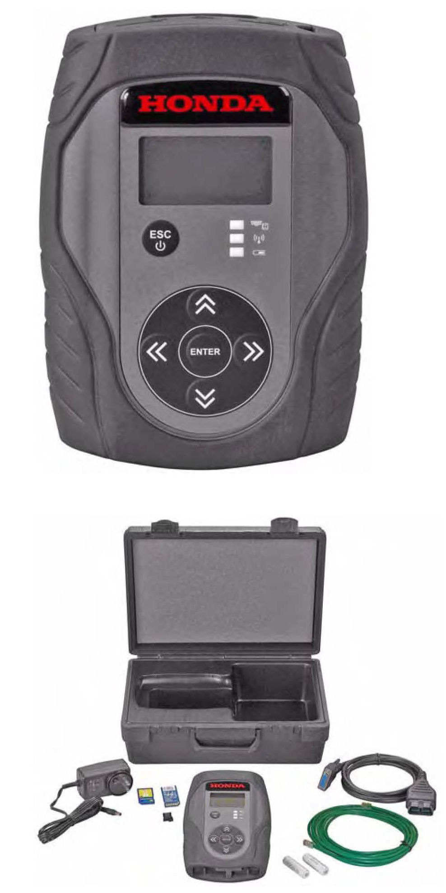
^ (Available through the Acura Tool and Equipment Program; call)
^ MVCI Kit
NOTE:
For more information on kit contents, refer to the Modular Vehicle Communication Interface (MVCI) User Guide or Acura Tool and Equipment Program on ISIS.
- MVCI Unit - M/N OTCH5528542
- Ethernet Cable - M/N OTCH559594
- OBD-II 16P Cable (DLC Cable) -
M/N OTC3825-32
- AC Adapter - M/N OTCH550207
- 4GB SD Memory Card - M/N OTCH550881
UPDATING TIPS AND PRECAUTIONS
^ If you're updating a control module/unit on a new vehicle, make sure all its fuses were installed at TQI.
^ To prevent control unit/module damage, do not operate anything electrical (audio system, brakes, A/C, power windows, moonroof, etc.) during the update.
^ If the Database Update listed in the service bulletin is later than that shown by the software, please see the software installation procedure in the following two documents in Tool Information on ISIS (go to General Publication, then Tool Information):
^ Installation Instructions for HDS PC Software
^ MVCI User Guide (see HDS MVCI Firmware Update section)
^ Do not connect an additional power supply to the MVCI when it is connected to the vehicle; power is supplied through the DLC.
^ To ensure that the control module/unit is not permanently damaged during updating, verify that the vehicles 12-volt battery is fully charged before starting an update.
NOTE:
If the vehicles 12-volt battery drops below 10 volts during the update, the programming status bar may go past 100 percent, or the updating tool may display an error message.
^ If you have a problem during an update (D4/immobilizer indicator flashes, update tool freezes, etc.), you can minimize the chances of damaging the control unit/module by doing one or more of these actions:
- CRITICAL: Keep the ignition switch in ON (II).
- Connect a jumper battery (DO NOT connect a battery charger).
- Disconnect the updating tool from the vehicles DLC.
- Reboot the updating tool.
- Reconnect the updating tool to the vehicles DLC, and retry the updating procedure.
HOW TO CHECK IF THE MVCI IS UPDATED
Whenever there is an HDS software update, there will
be an update for the MVCI. After updating the HDS,
update the MVCI. For more information on how to
update the MVCI, refer to the Modular Vehicle
Communication Interface (MVCI) User Guide on ISIS
under General Publications > Tool Information.
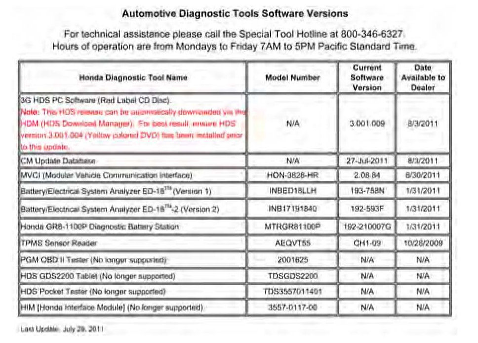
To check that the MVCI has the latest database
installed, go to the iN home page and click on
SERVICE > Service Bay > Diagnostic Tools
Software Versions. The most recent version of the
database is listed under CM Update database.
Turn on the MVCI, then press the ENTER button on the
MVCI to see the User Config menu. Select CM Update
Mode, then select Reprogramming.
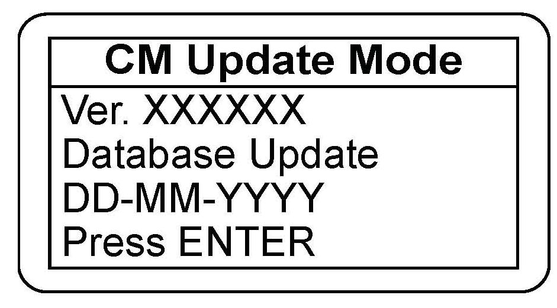
The current database update version is listed under
Database Update.
If the Database Update version is not the same as the
most recent version listed on ISIS, update the MVCI.
Unnecessary or incorrect repairs resulting from a
failure to update the HDS or MVCI are not covered
under warranty.
UPDATING WITH THE MVCI
Make sure you have the latest control module (CM)
update software loaded from your HDS PC to your
MVCI. To make sure you have the latest CM database
update, see HOW TO CHECK IF THE MVCI IS
UPDATED. The Database Update version appears
when you select Reprogramming, then press ENTER.
1. Connect the DLC cable to the MVCI and to the vehicles DLC.
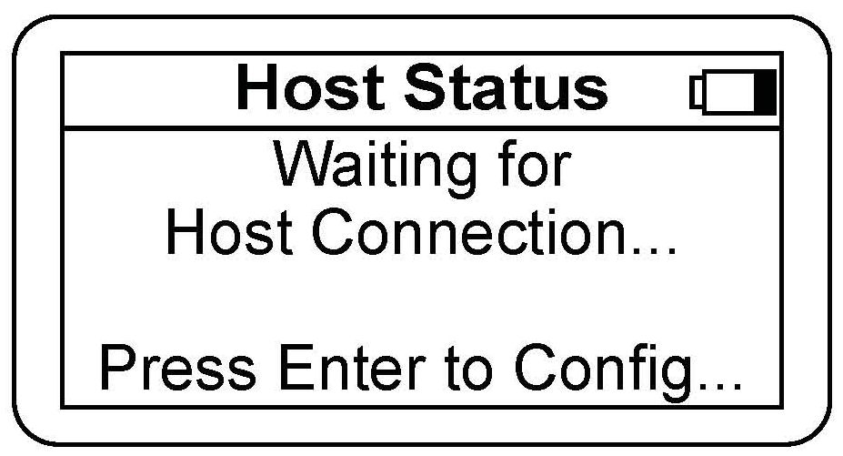
*2. Turn the ignition switch to ON (II). On vehicles with one push start ignition system, push the start button twice without your foot on the brake pedal. The MVCI automatically boots up.*
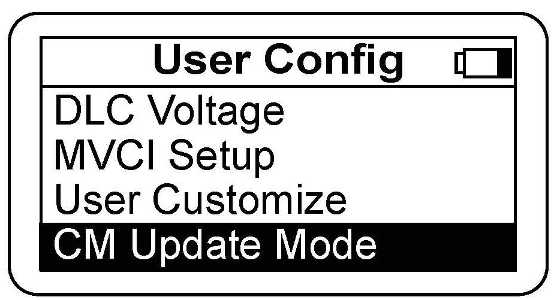
3. Press the ENTER button on the MVCI to see the User Config menu. Select CM Update Mode.
4. Select Reprogramming, then press ENTER.
NOTE: Use these MVCI default settings:
Setting 1 -
Destination: USA
Language: American English
Setting 2 -
Auto Detect: Yes
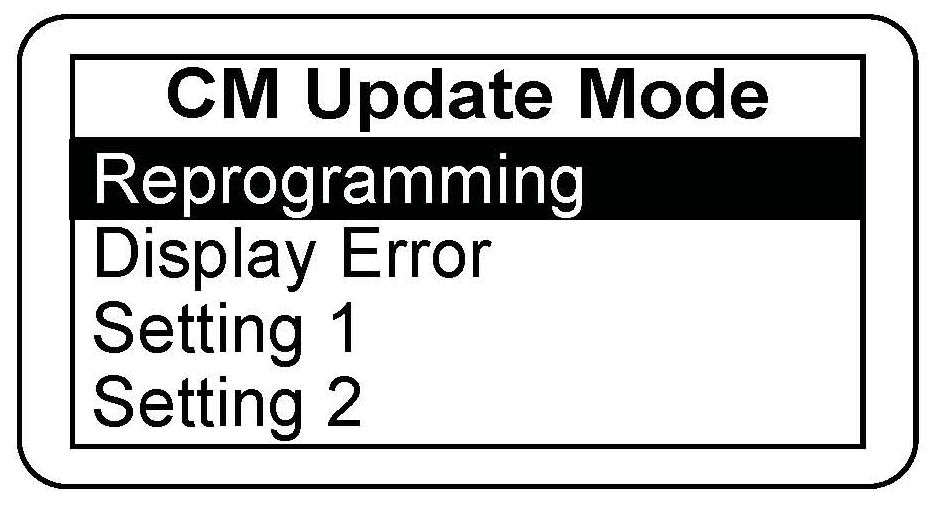
For more information on these settings, refer to the Modular Vehicle Communication Interface (MVCI) User Guide.
5. The CM Update software information appears.
Press ENTER to continue.
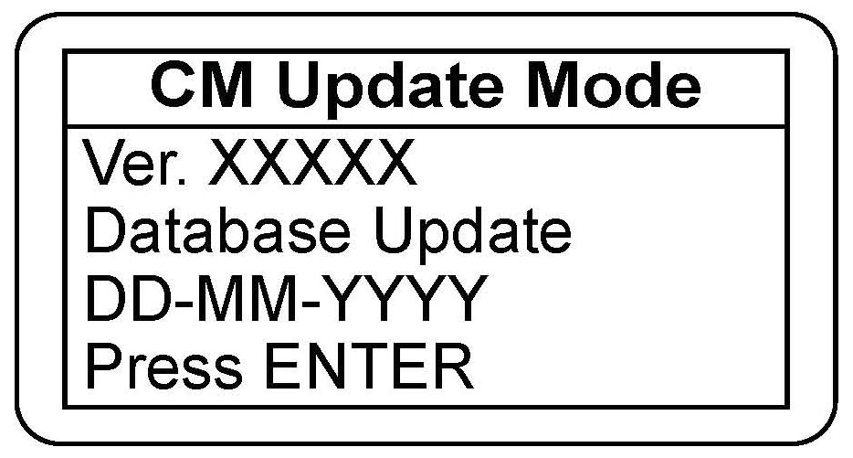
NOTE:
If the database date shown is an earlier version than the one listed in an Acura service communication (service bulletin, product update, iN message, etc.), press ESC, then update your MVCI before continuing.
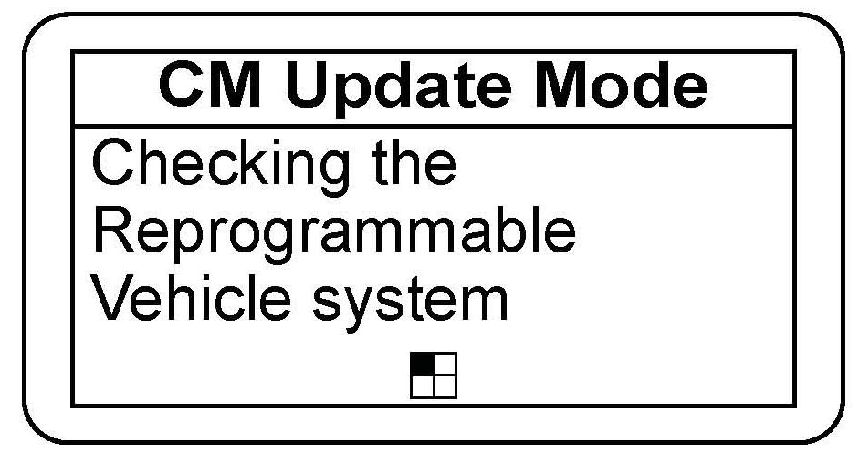
6. Wait for the MVCI to automatically check the vehicles reprogrammable systems. This may take up to 90 seconds. If an update is available, displays that system on the System Selection screen.
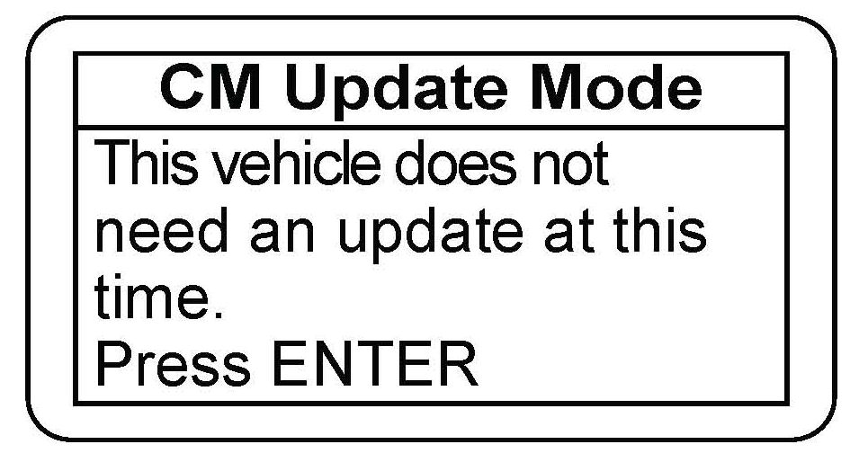
If the reprogrammable systems on the vehicle are already updated, the following screen will be displayed:
*7. If there is one or more updates available, select the system that you want to update, then press ENTER to continue, or press ESC to exit.
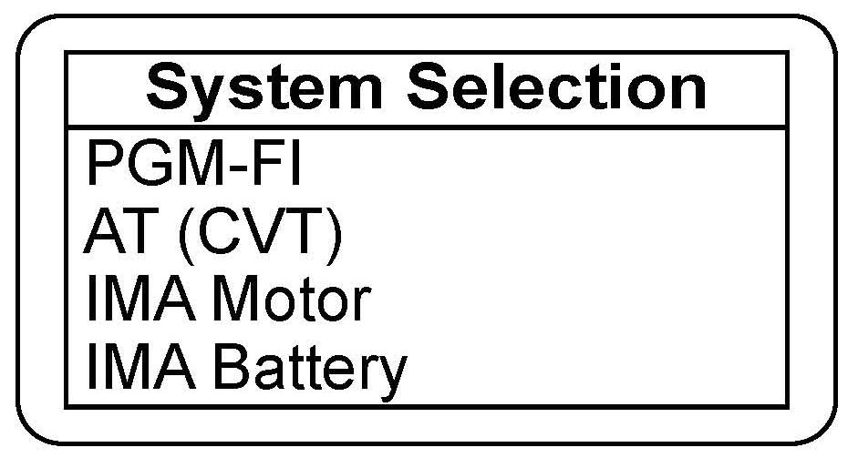
When you are directed to update a specific system by a service publication (service bulletin, service manual, etc.), or by American Honda personnel (Tech Line, DPSM, etc.), or if the update is based on the diagnosis of a client complaint, update only that system, even if the MVCI indicates that updates to other systems are available.*
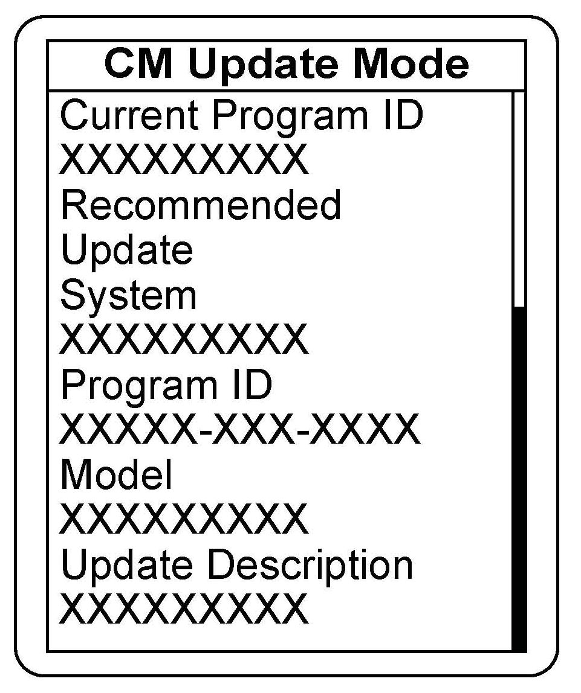
8. The current program ID, the recommended update, and other details appear. Press ENTER to continue, or press ESC to exit.
* NOTE:
Only updates indicated by a service publication, American Honda personnel, or a repair based on a diagnosis of a client complaint are covered under warranty. Updating other systems because an update is available is not covered.*
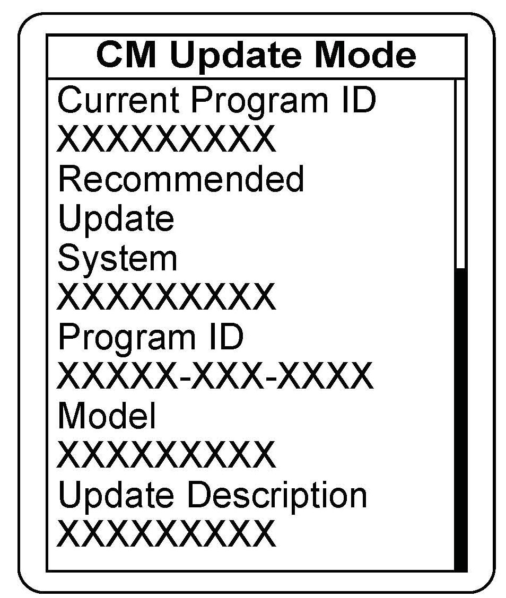
9. The current program ID, the recommended update, and other details appear. Press ENTER to continue, or press ESC to exit.
NOTE:
If you are updating a system based on a service bulletin, check that the MVCI is recommending the applicable program ID listed in the bulletin (or a later program ID) as the Recommended Update when the update begins.
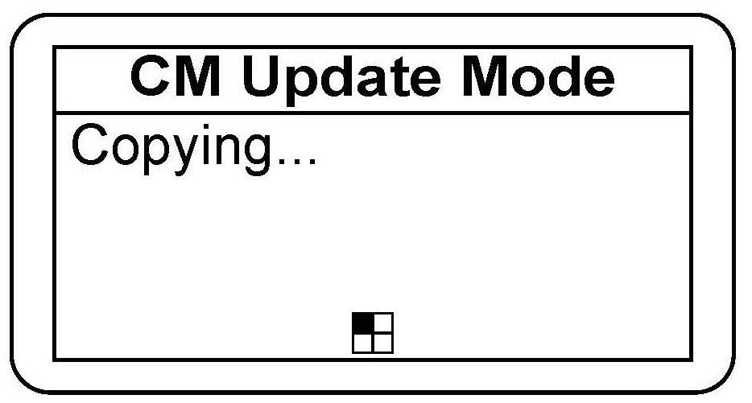
10. Wait for the MVCI to copy the data for updating the vehicle.
11. After the MVCI has copied the files, a confirmation screen appears. Press ENTER to update the control unit/module, or press ESC to exit.
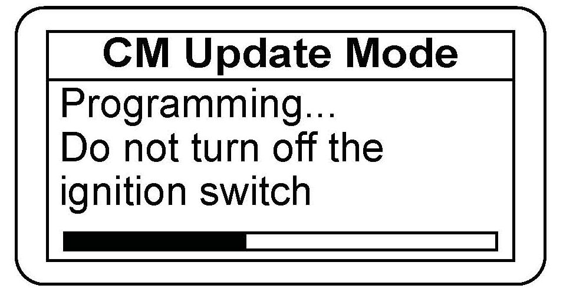
12. Wait for the MVCI to update the control unit/module.
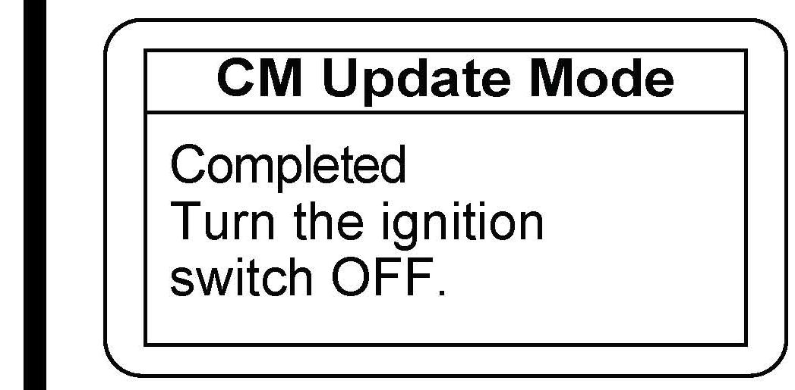
13. After the MVCI finishes updating the control unit/module, turn the ignition switch to LOCK (0) when directed by the MVCI. On vehicles with one push start ignition system, push and hold down the start button without your foot on the brake pedal so the vehicle is in the OFF mode.
14. Turn the ignition switch back to ON (II) within 60 seconds to complete the updating procedure. On vehicles with one push start ignition system, push the start button twice without your foot on the brake pedal to turn ON the ignition again.*
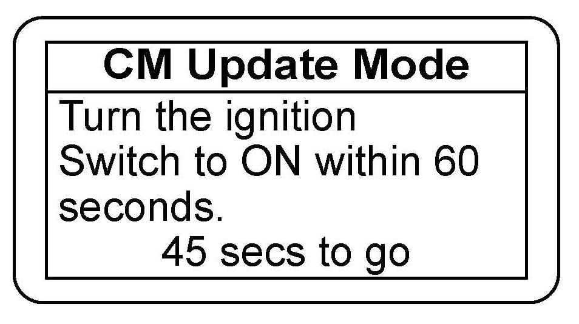
NOTE:
The MVCI has a countdown timer. If you do not turn the ignition switch to ON (II) within 60 seconds, the MVCI sets an error code.
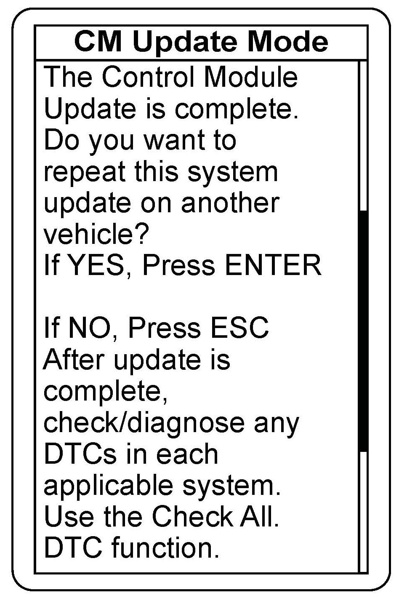
15. After finishing the updating procedure, the MVCI gives you the option of updating the same system on another vehicle. For more information on updating several vehicles, see the MVCI User Guide.
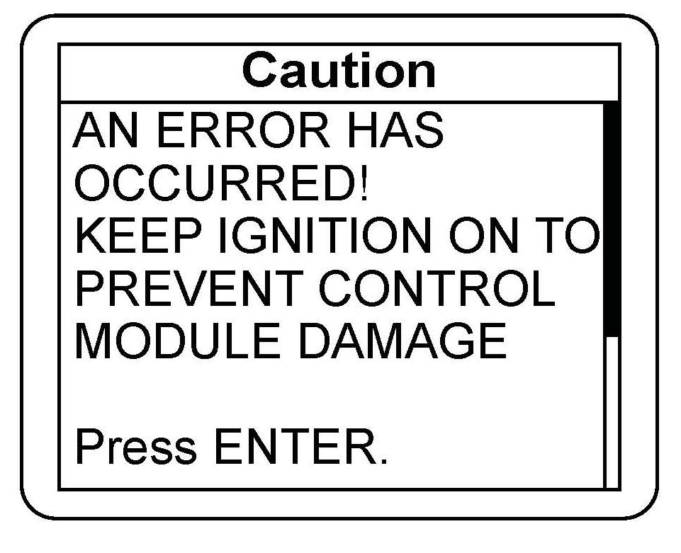
16. If an error occurs during the updating procedure, an error message appears. Keep the ignition switch in ON (II). Press ENTER to display the error code. Refer to the CM Update Error Code Table and Error Messages in the MVCI User Guide for more information about the code and its solutions.

Disclaimer